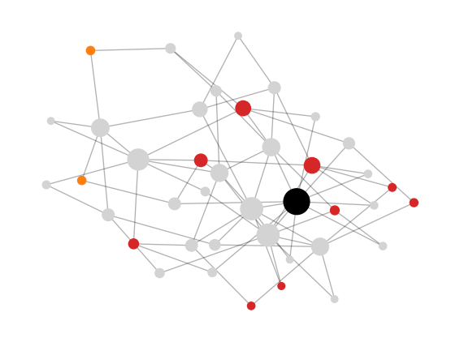

failed per step: [1, 9, 2], G = 0.53Module 5: Complex Networks
Motter and Lai proposed a minimal model of cascades of overload failures on networks (motter2002cascade?). The model has one parameter and one rule. This page states the model. The next page implements it.
Something travels between every pair of nodes along shortest paths: data packets, goods, or, in a crude picture, power. The load \(L_i\) of node \(i\) is the number of shortest paths between pairs of other nodes that pass through \(i\) (motter2002cascade?). When several shortest paths join the same pair, each one counts with equal weight. This is the betweenness centrality of Network Concepts, without normalization:
\[ L_i = \sum_{s \neq i \neq t} \frac{\sigma_{st}(i)}{\sigma_{st}}. \]
Operators build some spare capacity into each node. Motter and Lai assume that the capacity is proportional to the initial load \(L_i(0)\) of the intact network (motter2002cascade?):
\[ C_i = (1 + \alpha)\, L_i(0), \qquad \alpha \ge 0. \]
The tolerance parameter \(\alpha\) is the same for every node. With \(\alpha = 0\) the network runs at full capacity; with large \(\alpha\) every node has plenty of margin.
The damage is measured by the relative size of the largest connected component after the cascade (motter2002cascade?):
\[ G = \frac{N'}{N}, \]
where \(N\) is the number of nodes of the intact network and \(N'\) the size of its largest component at the end. \(G \approx 1\) means the network survived; \(G \ll 1\) means it broke apart.
Motter and Lai compared triggers chosen at random with triggers chosen as the node with the largest load, on model networks and on real networks including a power grid and the Internet (motter2002cascade?). They found that:
The first result parallels the random-failure versus attack asymmetry of Robustness and Percolation, but here one removed node is enough, because the load it carried moves to other nodes.
Figure 1 runs one cascade on a Barabási-Albert graph with 40 nodes. The trigger is the node with the largest load and \(\alpha = 0.5\).

failed per step: [1, 9, 2], G = 0.53Node size is proportional to the initial load. Most nodes have a small load, and a few hubs carry most shortest paths. Notice that many of the failed nodes had a small initial load: a small load means a small capacity, so a modest increase after the redistribution is enough to overload them.
In a star graph with \(N\) nodes, what is the load of the centre and of a leaf? What happens to \(G\) if the centre fails? Does \(\alpha\) matter?
Every pair of leaves has exactly one shortest path, through the centre, so the centre has load \(\binom{N-1}{2}\) and each leaf has load 0. If the centre fails, no edges remain and \(G = 1/N\). The value of \(\alpha\) does not matter: the network breaks apart through the removal itself, with no overload step.